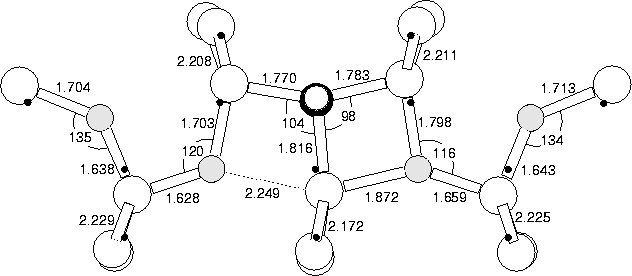
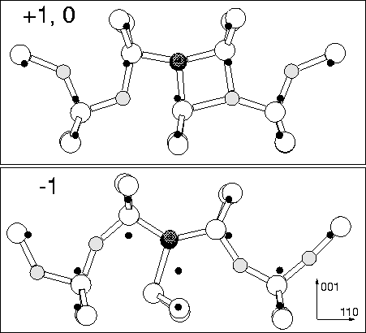
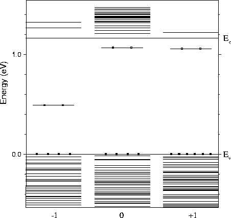

We modelled the (CH)iO4i defect in the +1, neutral and -1 charge states using the cluster described in Section 8.2 above. The neutral structure is given in Figure 8.8, along with bond lengths and angles. The +1 structure is almost identical (similar to the result for NiO2i). The +1 and -1 structures are shown in Figure 8.9, and the eigenvalues in Figure 8.10. Both the neutral and +1 defects act as a shallow donor, but the gap level becomes very deep for the -1 charge state. The vibrational modes for the +1 structure are shown in Table 8.3. These show high frequency C-stretch modes at 1256.3 and 1229.3 cm-1, much higher than C-stretch modes in either Ci, CiH or CsCiH; this is due to compression of the C-Si bonds by the neighbouring O.
| 12CH16O | 17O | 18O | 13C | D |
| 2866.0 | 0.0 | 0.0 | 5.5 | 783.4 |
| 1256.3 | 2.2 | 3.9 | 22.0 | 17.1 |
| 1229.3 | 0.8 | 1.6 | 23.6 | 135.6 |
| 1132.8 | 0.5 | 1.0 | 6.3 | 142.6 |
| 1022.8 | 5.9 | 9.5 | 15.5 | 51.2 |
| 975.2 | 13.2 | 23.4 | 5.0 | 27.6 |
| 971.4 | 22.1 | 42.4 | 2.8 | 75.0 |
| 947.9 | 15.6 | 31.9 | 10.7 | 67.2 |
| 880.1 | 20.9 | 38.3 | 1.1 | 30.6 |
| 855.5 | 13.9 | 29.1 | 7.3 | 34.8 |
| 848.8 | 20.1 | 38.4 | 1.0 | 37.7 |
| 740.6 | 12.6 | 22.9 | 0.1 | 1.6 |
| 737.9 | 12.9 | 24.4 | 0.8 | 8.0 |
| 682.0 | 9.9 | 18.8 | 5.9 | 12.0 |
| 634.0 | 3.7 | 7.6 | 1.1 | 3.1 |
| 616.4 | 4.7 | 8.7 | 0.1 | 0.0 |
| 602.8 | 6.9 | 13.4 | 0.3 | 1.5 |
| 554.0 | 11.9 | 13.7 | 0.1 | 1.0 |
In the +1 and neutral charge state, the oxygen atoms force inwards towards the core Si, behaving in exactly the same way as NiO2i. However in the -1 charge state, one pair of Oi atoms switch so that their Si-O-Si bond angle points away from the core instead of towards it, the oxygen atom is then further from the core Si atom. This allows the core to distort, similar to the NiOi defect, with the majority of the single donor state localising on a lobe of the p-orbital of the Si furthest from the remaining compressive Oi atom. This removes the primary method of electrostatic compression, so the level can once more drop to lie deep in the gap. If this is in n-type material (e.g. P doped material), then it will spontaneously trap a second electron to become -1 charged.
The +1 charge state structure shows some assymetry, with the core Si atom sitting slightly closer to one of the O atoms than the other. This would appear to breach the experimentally observed symmetry of C2v. However, the energy saved relaxing from the symmetric to the off-centre structure is only 0.0152 eV. This represents the energy barrier to the core Si atom switching from one side to the other, and since it is so low the core will in practise be switching rapidly between the two sites. Thus the defect will have a time averaged dynamic symmetry of C1h, or C2v if the H atom is not observed.
These results provide an explanation of why the D1 D3
centres are metastable +1 defects that can switch structure to become
deep level -1 charged defects. Isothermal capacitance transient
(ICTS) measurements under DLTS gave a barrier to electron capture of
0.05 eV. The barrier for major structural reconstruction should be
much higher than this. However the energy barrier for the `pop-out'
mechanism might be expected to be small. The energy for precession of
an isolated Oi atom around its Si-Si bond is <0.09 eV
[221], and this would be the mechanism by which the defect
could restructure itself between the deep and shallow defect state.
D3
centres are metastable +1 defects that can switch structure to become
deep level -1 charged defects. Isothermal capacitance transient
(ICTS) measurements under DLTS gave a barrier to electron capture of
0.05 eV. The barrier for major structural reconstruction should be
much higher than this. However the energy barrier for the `pop-out'
mechanism might be expected to be small. The energy for precession of
an isolated Oi atom around its Si-Si bond is <0.09 eV
[221], and this would be the mechanism by which the defect
could restructure itself between the deep and shallow defect state.
Sample treatment would also suggest (CH)iO4i. The D1 defect is only observed in hydrogenated irradiated Cz-Si samples. Irradiation produces Ci which goes on to form CiOi; this disappears as the D1 defect is formed, consistent with a Ci based defect core. The defect forms through dimer addition, which is also consistent with (CH)iO4i.
The results of Markevich suggest that this is a negative-U centre, although the negative-U energy is extremely small and outside the accuracy of our code.
|  |
|  |
|  |